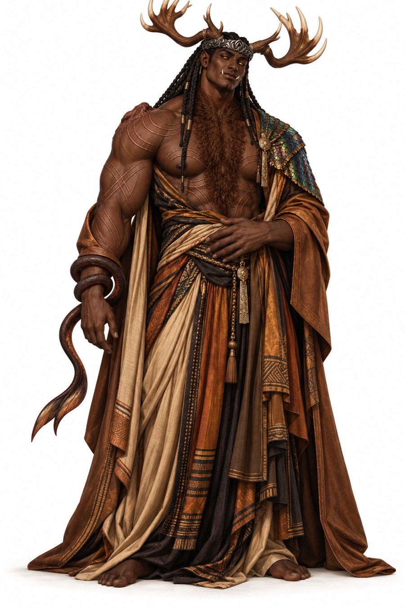
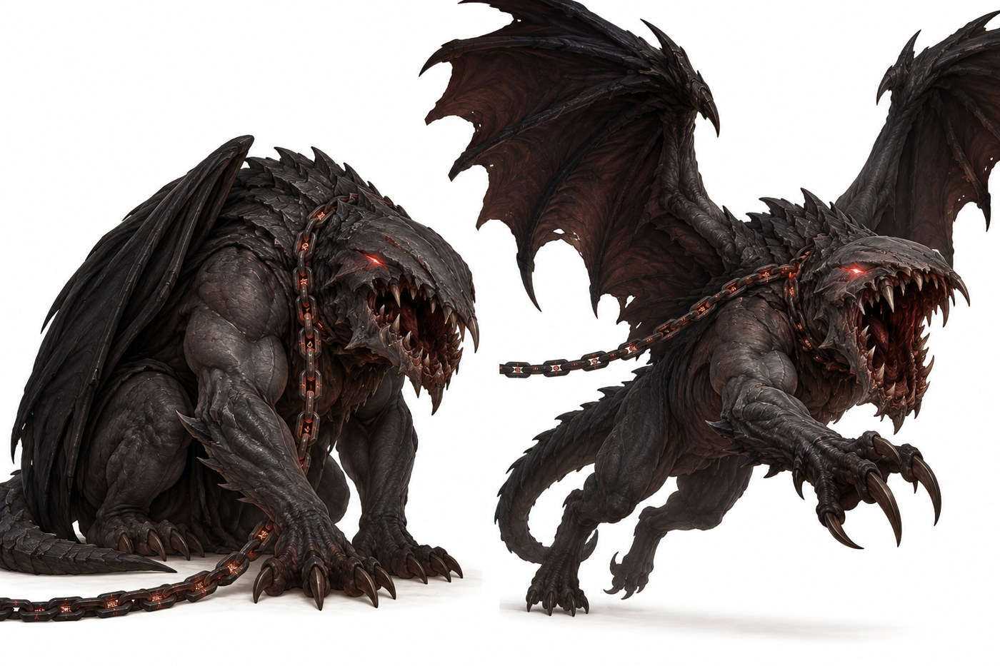

The Vatrajaxu
The Vatrajarə who fell.
This section follows the Ishphaeno Governance Compendium and the Aempaera references. Lines without a tag are settled. Tags mark anything less settled. Names are given in Vatraxu unless a Vatrahu form is named. It is written to be read before the books, so some family detail is left out on purpose.
At a glance
- Names
- Vatrajaħu in Vatrahu and Vatrajaxu in Vatraxu. Older documents call them the Valen. Decided
- Who
- Those who were Vatrajarə and fell in the Krang Uthjook. It is a species, not a royal designation.
- Known members
- Sadok and Lioshe.
- Body
- Changed by the Fall. See below.
- Voice
- Jaħuvatra in Vatrahu and Jaxuvatra in Vatraxu, the broken voice. It compels through broken trust rather than holy presence.
- Breath
- They breathe, and can hold their breath about ten times longer than the best human. Decided
What the Fall did


A Vatrajarə has ivory wings filled with aethaari. The Fall turned each pair into something else. Ankle wings became tails. Wrist wings became antlers of living bone, but only for those who had wrist wings. Eye wings became a second pair of eyes. Temple wings became a third pair of eyes, a second pair of antlers or horns, or were lost. Back wings blackened, and the stronger kept them. Decided
The details and the antler growth phase are on Krang Uthjook and TeSharani. The ranks they held before are on The Vatrajarə.
The ones who fell
Only a few are named in these pages. Sadok and Lioshe are the two who led the opposition. Others fell with them, and the number and ranks of the rest are not recorded here. Open
Their children
The children of the fallen, born after the Fall, are the Vatrajaxo. The Vo’im, the children of Vatrajarə and humans, are a separate people. They already existed before the war.
Open questions
- How many fell, and how their ranks were spread Open
- Whether fallen Vatrajaxu can be restored, and what that would cost Open
- Whether any fallen live outside Ishphaeno Open